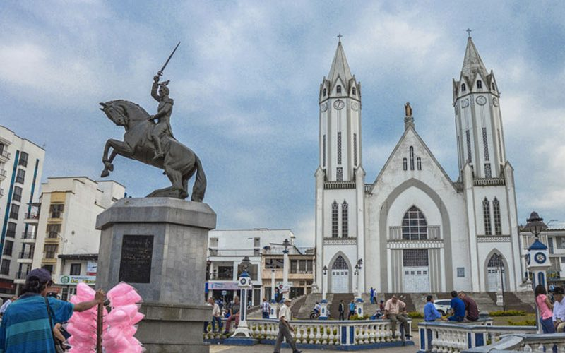
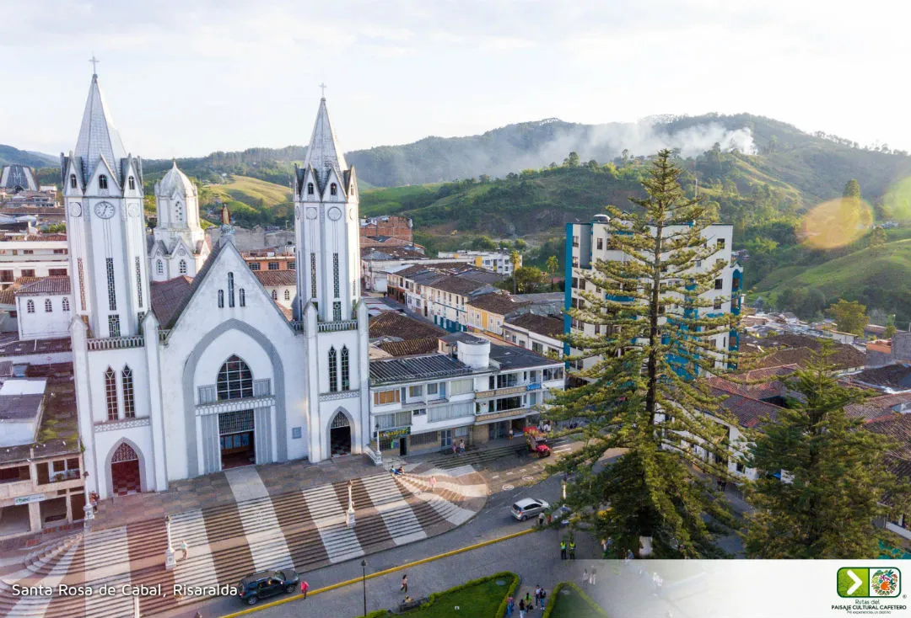

Parque Las Araucarias
Santa Rosa de Cabal, Risaralda




Descripción
El Parque Las Araucarias es un espacio público emblemático de Santa Rosa de Cabal, caracterizado por sus majestuosos árboles de Araucaria y amplias zonas verdes. Es un lugar ideal para el esparcimiento familiar, actividades recreativas y encuentros culturales.
Características
- 🌲 Araucarias centenarias
- 🏃♂️ Zonas deportivas
- 👨👩👦 Áreas recreativas
- 🎭 Eventos culturales
- 🌳 Zonas verdes
- 🪑 Zonas de descanso
- 📸 Puntos fotográficos
Horarios y Precios
Horario:
24 horas
Días:
Todos los días
Entrada:
Gratuita
Restaurantes cercanos
-
ChoriSant
- Chorizos santarrosanos y comida típica
- Ubicación: Marco del Parque de las Araucarias
-
Restaurante Asadero Araucarias
- Platos a la parrilla y comida tradicional
- Dirección: Carrera 15 #13-01, Santa Rosa de Cabal
-
La Postrera Campestre
- Especialidad en postres
- Ambiente campestre
- Cerca del parque
-
Don Pascual - Café Restaurante
- Café de origen local
- Platos colombianos
- Ambiente acogedor
-
Vitra Gastropub
- Gastronomía innovadora
- Música en vivo
- Experiencia culinaria única
Alojamientos cercanos
-
Hotel Casa Colonial
- A pocos pasos del parque
- Habitaciones cómodas
- Servicio personalizado
-
Hotel Plaza San Miguel
- Ubicación: Centro de Santa Rosa de Cabal
- Habitaciones modernas
- Restaurante propio
-
Hotel Los Cristales
- Fácil acceso a atracciones
- Alojamiento confortable
- Ideal para turistas
-
Hostal Campestre Araucarias
- Entorno natural
- Wi-Fi gratuito
- Jardín y terraza
-
Hotel Hacienda Santa Clara
- A minutos en coche del parque
- Restaurante propio
- Servicios de spa